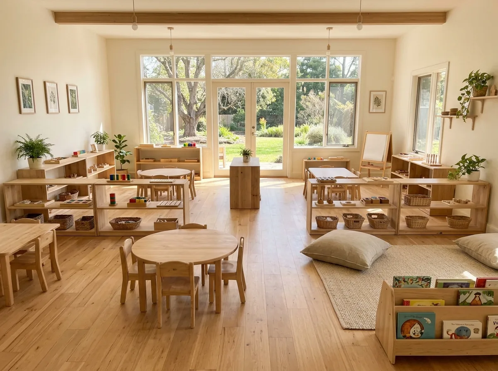
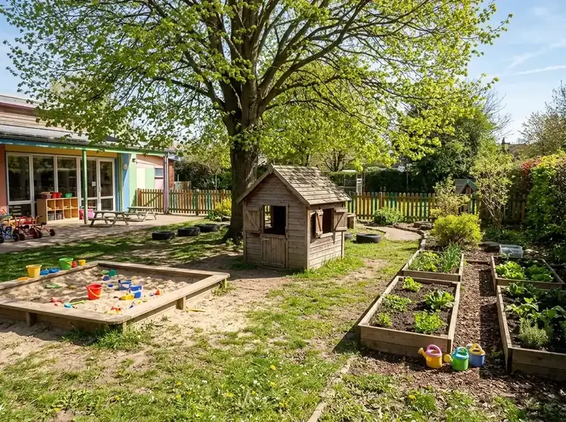

La giornata di Tommaso
Maestra MartaOggi ha costruito una torre altissima con i cubi di legno e l'ha fatta crollare ridendo. Domani portate un cambio in più: si va in giardino a travasare la sabbia.

Comunicazioni
Menu della settimana
Dieta di Tommaso: senza uovo. La cucina sostituisce in automatico i piatti segnati.
Presenze
presenteassentechiuso
Avvisa un'assenza
Retta e pagamenti
Ricevute
